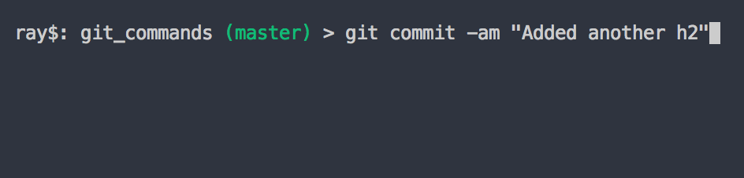

Working with git. Making a change on git hub.
git init
Set up the initial git tracking folder.

git add
Add file to staging area.

git add all
Add file to staging area.
git commit -m
Commit files with a message.

git commit -am
Be careful using this, it does commit all, so if there are somethings you didn't want to include in the change, don't use this.
Files that are not being tracked or files that are being deleted are not included in this.
Works best for modifications.
Commit all files with a message.
git remove file that's been deleted.
If you delete the file not using git(eg. move to trash from folder), you still have to make git aware.
You need to still stage the deleted file with git add "filename".
Then you can commit to the delete.
git delete file.
You can have git do the whole delete.
It adds and moves to the staging area in this step.
The commit is still needed.
git rename file.
If you rename the file inside the directory folder.
We need to add the primary to the stage, and remove the first file.

git then recognizes the changes and renames it.
Then just make the commit.
git rename file with git.
using th mv command it takes the current file and the new name as the arguments.
Then make the commit.

Moving to a directory is the same. The second argument has the directory as well as the file name.

Ignoring files.
Create a .gitignore file in the root of the directory.
These are a set of rules that git can use to follow to ignore certain files.
Simple instructions are words or basic regular expressions.(* ? [aeiou] [0-9])
You can also negate expressions with !
*.php, would be ignore all php.
!index.php would not ignore.
ignore all files with a trailing slash assets/videos/
comment with a #.
It's best to create the file from the command line. Using nano.
It will create a new file inside the current directory.

Now we want to include that file in git.

Files that should be ignored.
- compiled source code.
- packages and compressed files.
- logs and databases.
- operating system generated files
- user-uploaded assets(images, PDFs, videos)